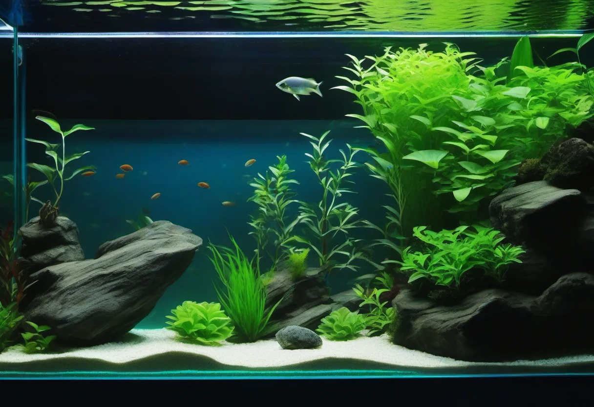

Warum ein leises Aquarium wichtig ist
Ein Aquarium soll Ruhe ausstrahlen, nicht den Schlaf rauben. Wenn plötzlich ein Brummen, Ploppen oder Rauschen aus dem Unterschrank dringt, leidet nicht nur die Wohlfühlatmosphäre im Wohnzimmer – viele Aquarianer berichten auch von schlaflosen Nächten, wenn das Becken direkt neben dem Bett steht. Die gute Nachricht: Nahezu jedes Aquariumgeräusch lässt sich mit etwas Ursachenforschung, gezielter Wartung und passender Schalldämmung deutlich reduzieren oder sogar komplett beseitigen.
Aquariumgeräusche entstehen immer an einer konkreten Stelle – in der Pumpe, im Filter, im Ausströmer, in der Heizung oder durch das Plätschern an der Wasseroberfläche. Wer die Geräuschquelle richtig identifiziert, kann gezielt eingreifen. In diesem Guide zeigen wir dir Schritt für Schritt, was hinter den häufigsten Geräuschen steckt, wie du sie zuordnest und welche Lösungen wirklich funktionieren. Von der brummenden Pumpe bis zum nervigen Plopp der CO₂-Anlage – danach weißt du, was zu tun ist.
🛒 Leise Pumpen und Filter – empfohlene Modelle
Flüsterleise Außenfilter und moderne Strömungspumpen reduzieren Brummen, Surren und Vibrationen spürbar.
👉 Flüsterleise Filter bei Amazon ansehenBrummen und Surren – wenn die Pumpe brummt
Ein gleichmäßiges, tiefes Brummen aus dem Unterschrank gehört zu den häufigsten Aquariumgeräuschen. Die Ursache liegt fast immer in der Pumpe – sei es im Außenfilter, im Innenfilter oder in einer separaten Strömungspumpe. Wenn der Antrieb mit der Zeit verschleißt, vibriert er stärker und überträgt die Schwingungen auf den Filtertopf, den Schlauch und schließlich auf den Unterschrank. Was als kleines Surren beginnt, kann sich so zu einem hörbaren Brummen steigern, das den gesamten Raum erfüllt.
Ursache: Lose Keramikachse oder verschlissener Rotor
In den meisten Pumpen rotiert ein Keramikkörper in einer Keramikbuchse, beides läuft wassergeschmiert. Mit der Zeit setzen sich feine Schmutzpartikel in den winzigen Spalt zwischen Achse und Buchse, die Keramik nutzt sich ab, und der Rotor läuft nicht mehr exakt zentriert. Das Ergebnis ist eine Unwucht, die sich als Brummen oder hochfrequentes Surren äußert. Bei billigen Pumpen kann dieses Geräusch schon nach wenigen Monaten auftreten, bei Markenpumpen erst nach Jahren.
Lösung: Pumpe reinigen oder tauschen
Eine regelmäßige Reinigung der Pumpe verlängert die Lebensdauer und reduziert Geräusche erheblich. Nimm die Pumpe aus dem Filter, zerlege den Pumpenkopf und entferne Kalk und Schmutz mit einer weichen Bürste und etwas Essigwasser. Kontrolliere dabei die Keramikachse auf Riefen oder Risse. Ist die Achse sichtbar abgenutzt, sollte der Rotoreinsatz als Ersatzteil getauscht werden – das kostet bei den meisten Markenherstellern nur wenige Euro und bringt die Pumpe meist wieder auf das ursprüngliche, leise Laufniveau zurück.
Bringt die Reinigung keine spürbare Verbesserung, lohnt sich der Austausch gegen ein flüsterleises Modell. Achte beim Neukauf auf die dB-Angabe des Herstellers – gute Außenfilter liegen heute bei 20 bis 30 dB, was in einem Meter Abstand praktisch nicht mehr hörbar ist.
Klopfen und Vibrieren – wenn der Filtertopf schwingt
Ein rhythmisches Klopfen oder ein metallisches Rattern aus dem Unterschrank deutet fast immer auf den Filter selbst hin. Besonders Außenfilter sind anfällig für Resonanzen, weil ihr großer, mit Wasser gefüllter Filtertopf als Resonanzkörper wirkt. Schon kleinste Vibrationen der Pumpe werden verstärkt und als Klopfen hörbar. Verstärkt wird das Ganze, wenn der Filter nicht auf einer schalldämmenden Unterlage steht oder Schläuche stramm an der Pumpe ziehen.
Lösung: Entkoppeln und Dämmen
Die wichtigste Maßnahme gegen Klopfen ist die akustische Entkopplung des Filters vom Unterschrank. Spezielle Filtermatten aus Moosgummi oder geschlossenzelligem PE-Schaum (gibt es für wenige Euro im Aquaristik-Fachhandel) reduzieren die Schwingungsübertragung drastisch. Einfach den Filtertopf auf eine 10 bis 20 mm dicke Matte stellen – der Unterschied ist oft verblüffend.
Ebenso wichtig: Die Schläuche sollten möglichst lang und in sanften Bögen verlegt werden, ohne dass sie unter Spannung am Filter oder Becken ziehen. Eine schwingende Schlauchverbindung kann nämlich selbst zum Geräuschverursacher werden, wenn sie an der Beckenkante oder am Schrank anschlägt. Befestige die Schläuche mit Gummiclipsen oder Silikonringen, sodass sie frei schwingen können, ohne anzustoßen.
Plopp, Plopp, Plopp – wenn Luftblasen das Aquarium laut machen
Ein rhythmisches, in unregelmäßigen Abständen auftretendes Ploppen gehört zu den zweithäufigsten Aquariumgeräuschen. Verursacher sind in den meisten Fällen Luftblasen, die an der Wasseroberfläche zerplatzen – entweder aus dem Filterausströmer, aus dem CO₂-Diffusor oder aus einer Belüfterpumpe. Besonders intensive Plopp-Geräusche entstehen, wenn größere Blasen auf einmal aufsteigen oder wenn der Ausströmer sehr nah unter der Wasseroberfläche sitzt. Im Schlafzimmer können solche Plopp-Geräusche enorm stören, weil das menschliche Gehör auf unregelmäßige Geräusche besonders empfindlich reagiert.
Lösung: Ausströmer tiefer setzen oder wechseln
Der Ausströmer sollte möglichst tief im Aquarium und unter der Wasseroberfläche positioniert werden, damit die Blasen Zeit haben, sich zu kleinen Perlen zu zerstreuen, bevor sie an der Oberfläche ankommen. Ideal ist eine Tiefe von 10 bis 15 cm unter der Wasseroberfläche. Flach ausgeprägte Ausströmer wie die klassischen Lippen-Ausströmer erzeugen ein gezieltes, leise plätscherndes Geräusch, das viele Aquarianer als angenehm empfinden. Wer absolute Stille möchte, kann auf einen Diffusor mit Membran-Technologie umsteigen, der die Luft in mikrofeine Bläschen zerstäubt, die lautlos an die Oberfläche treiben.
Spezialfall: CO₂-Plopp
Eine CO₂-Druckgasanlage erzeugt zwar leise Bläschen, doch am Blasenzähler kann es ploppen, wenn das Gas mit dem Wasser im Zähler reagiert. Achte darauf, dass der Blasenzähler ausreichend Wasser enthält und nicht regelmäßig nachgefüllt werden muss. Moderne Blasenzähler haben einen Schwimmer, der die Wassermenge konstant hält und das Ploppen deutlich reduziert.
Rauschen und Strömung – wenn der Ausströmer zu viel will
Ein gleichmäßiges, breitbandiges Rauschen deutet auf zu starke Wasserbewegung hin. Besonders Strömungspumpen mit hohem Durchsatz erzeugen an der Wasseroberfläche eine starke Strömung, die Luft mitreißt und ein lautes Plätschern verursacht. Auch wenn eine gewisse Oberflächenbewegung für den Gasaustausch wichtig ist, kann zu viel davon das Aquarium hörbar laut machen. In offenen Becken ist der Effekt stärker als in abgedeckten Becken, weil die schallsammelnde Wasseroberfläche direkt mit der Raumluft in Kontakt steht.
Lösung: Pumpendurchsatz drosseln
Fast jede moderne Strömungspumpe ist regelbar. Reduziere die Leistung in kleinen Schritten, bis das Rauschen verschwindet, aber achte darauf, dass die Strömung im Becken noch ausreicht, um Pflanzen zu umspülen und stehende Ecken zu vermeiden. Faustregel: Die Strömungspumpe sollte das Beckenvolumen zwei- bis viermal pro Stunde umwälzen. Bei einem 200-Liter-Aquarium reichen also 400 bis 800 Liter pro Stunde – mehr ist selten nötig.
Ein zusätzlicher Trick ist die Verwendung von Ausströmer-Düsen, die das Wasser breit und flach ausstoßen, statt als scharfen Strahl. Solche Düsen erzeugen weniger Spritzgeräusche und verteilen die Strömung gleichzeitig besser im Becken.
Klicken und Ticken – die unheimlichen Geräusche
Ein leises Klicken oder Ticken, das unregelmäßig aus dem Aquarium kommt, kann viele Ursachen haben. In den meisten Fällen ist es harmlos und hat mit der Thermik des Wassers oder dem Ausdehnen von Materialien zu tun. Heizstäbe zum Beispiel erzeugen ein leises Klicken, wenn sich die Metallhülle beim Aufheizen minimal ausdehnt. Manche Aquarienbewohner – vor allem größere Fische und Welse – knacken mit den Kiefern, was wie ein Klicken klingt. Auch Garnelen können mit ihren Scheren ein Tipp-Geräusch erzeugen.
Wann ein Klicken bedenklich ist
Ein ungewöhnlich lautes, regelmäßiges Klicken, das auch dann auftritt, wenn das Licht aus ist und keine Tiere aktiv sind, sollte genauer untersucht werden. Es kann auf eine defekte Heizung hinweisen, deren Bimetall-Schalter nicht mehr sauber schaltet. In diesem Fall sollte der Heizstab getauscht werden – eine defekte Heizung ist ein Sicherheitsrisiko, weil sie überhitzen oder stehenbleiben kann. Auch ein loses Bauteil im Filter, das gegen die Topfwand schlägt, kann ein Klicken verursachen.
Schalldämmung – das Aquarium wird hörbar leiser
Neben der Beseitigung einzelner Geräuschquellen helfen generelle Maßnahmen zur Schalldämmung, das Aquarium hörbar leiser zu machen. Das fängt beim Unterschrank an und hört bei der Stellfläche auf. Selbst ein technisch einwandfreies Aquarium kann auf einem resonierenden Sideboard laut wirken, während es auf einem massiven, schweren Unterschrank vollkommen still ist.
Unterschrank richtig wählen
Ein guter Aquarienschrank ist nicht nur standsicher, sondern auch schwer. Massivholz oder mehrschichtige Spanplatten mit Metallverstärkungen dämpfen Vibrationen besser als leichte Möbelstücke. Steht das Aquarium auf einem dünnen, hohlen Sideboard, übertragen sich Pumpen- und Strömungsvibrationen direkt in den Raum. Eine simple Lösung: Eine schwere Spanplatte (mindestens 18 mm dick) zwischen Aquarium und Sideboard legen. Sie wirkt als Masse-Senke und reduziert die Schallübertragung spürbar.
Wandabstand und Schallabsorption
Steht das Aquarium frei im Raum, ist die Schallabstrahlung deutlich geringer als an einer Wand. Direkt an einer massiven Wand aufgestellt, werden tiefe Frequenzen reflektiert und können als Dröhnen wahrgenommen werden. Ein Wandabstand von 10 bis 15 cm hilft bereits. Noch besser wirkt ein dünner Akustik-Schaumstoff oder eine selbstklebende Bitumen-Matte hinter dem Aquarium, die tieffrequente Vibrationen schluckt.
Aquariumunterlage und Stellfläche
Eine hochwertige Aquarienunterlage aus geschlossenzelligem PE-Schaum ist Pflicht. Sie gleicht nicht nur leichte Unebenheiten aus, sondern dämmt auch Vibrationen. Achte auf eine geschlossenzellige Struktur – offenzellige Schaumstoffe saugen sich mit der Zeit mit Wasser voll und verlieren ihre dämmende Wirkung. Markenunterlagen wie die schwarzen Moosgummi-Matten von JBL, Dennerle oder Eheim sind zuverlässig und halten jahrelang.
🛒 Schalldämmung und Zubehör
Mit Moosgummi-Matten, Filtermatten und Schwamm-Antivibrations-Pads dämmst du Brummen und Klopfen spürbar.
Checkliste – Aquariumgeräusche in 10 Minuten analysieren
Wenn dein Aquarium ungewohnt laut ist, gehst du am besten systematisch vor. Die folgende Checkliste hilft dir, in kurzer Zeit die Geräuschquelle einzugrenzen:
- Licht aus, hinhören: Schalte das Licht aus und lausche. Tiergeräusche (Kieferknacken, Schwimmgeräusche) verschwinden oft zuerst.
- Pumpe aus, Filter abstecken: Trenne den Filter für 30 Sekunden vom Strom. Wird das Brummen leiser, liegt es am Filter. Bleibt es gleich, ist es ein anderes Gerät.
- Strömungspumpe testen: Schalte die Strömungspumpe ab. Verschwindet das Rauschen, ist sie der Verursacher.
- Heizung prüfen: Hört das Klicken auf, wenn du den Heizstab aussteckst? Dann ist er defekt und sollte getauscht werden.
- Ausströmer tiefer setzen: Ploppen Luftblasen an der Oberfläche? Setze den Ausströmer 5 cm tiefer und beobachte.
- Schlauchverlauf kontrollieren: Schläuche, die unter Spannung an der Beckenkante anschlagen, erzeugen ein rhythmisches Klopfen. Befestige sie mit Clipsen.
- Unterschrank abklopfen: Klopfe vorsichtig mit dem Fingerknöchel auf den Unterschrank. Klingt es hohl? Eine schwere Platte dämpft die Resonanz.
FAQ – die häufigsten Fragen zu Aquariumgeräuschen
Mein Aquarium brummt nachts besonders laut – warum?
Nachts ist es im Raum stiller, deshalb fallen dir Geräusche erst auf. Zusätzlich erwärmt sich die Luft nicht mehr durch Sonneneinstrahlung, und der Heizstab muss mehr arbeiten, um die Temperatur zu halten. Das kann ein leises Brummen oder Ticken verstärken. Auch das Strömungsgeräusch des Filters wirkt nachts lauter, weil die auditive Wahrnehmung in absoluter Stille empfindlicher ist.
Wasserfall-Ausströmer – laut oder leise?
Wasserfall-Ausströmer erzeugen absichtlich ein Plätschern, weil sie die Oberflächenbewegung maximieren sollen. Sie gehören zu den lautesten Ausströmertypen und sind für leise Aquarien ungeeignet. Wer Stille möchte, greift zu schmalen, tief sitzenden Flachausströmern oder Membran-Diffusoren.
Filter brummt nach Reinigung – was tun?
Wenn der Filter direkt nach einer Reinigung lauter wird, wurde er möglicherweise nicht korrekt zusammengesetzt. Kontrolliere, ob alle Dichtungen richtig sitzen, der Pumpenkopf fest verschraubt ist und der Filtertopf nicht versehentlich schief aufgesetzt wurde. Auch ein nicht vollständig entlüfteter Filter kann gluckern und brummen. Öffne in diesem Fall kurz die Ansaug- oder Auslassventile, damit die Luft entweichen kann.
Aquarium pfeift – ist das gefährlich?
Ein pfeifendes oder zischendes Geräusch aus dem Filter deutet auf eine undichte Stelle hin – meist am Schlauchanschluss, am Ventil oder am Dichtungsring. Behebe das Leck zügig, denn ausströmende Luft kann den Filterwirkungsgrad senken und im schlimmsten Fall zu Wasseraustritt führen. Drehe die Verschraubungen nach, tausche defekte Dichtungen oder kürze den Schlauch und setze ihn neu auf.
Wann du den Profi rufen solltest
Die meisten Aquariumgeräusche lassen sich mit Geduld, etwas Werkzeug und regelmäßiger Wartung in den Griff bekommen. Es gibt aber Situationen, in denen du besser einen Aquaristik-Fachhändler oder einen erfahrenen Aquarianer um Rat fragen solltest. Wenn der Filter trotz Reinigung und Pumpendemontage laut bleibt, kann ein mechanischer Schaden vorliegen, der mit Spezialwerkzeug behoben werden muss. Auch ein dauerhaft leckender Filter oder ein Heizstab, der die Temperatur nicht mehr konstant hält, gehört in fachkundige Hände.
Zögere auch nicht, im Fachhandel nachzufragen, wenn du dir bei der Identifikation der Geräuschquelle unsicher bist. Ein guter Händler kennt die typischen Probleme der gängigen Filter- und Pumpenmodelle aus eigener Erfahrung und kann dir oft schon am Telefon sagen, woran es liegt.
Fazit – Mit ein wenig Aufwand wird es leise
Aquariumgeräusche sind kein Schicksal. Die meisten Brumm-, Plopp- und Rauschgeräusche lassen sich mit einfachen Mitteln deutlich reduzieren. Reinige regelmäßig die Pumpe, tausche verschlissene Verschleißteile rechtzeitig aus, dämme den Filter mit Moosgummi, achte auf den Ausströmer-Sitz und überprüfe Schlauchverbindungen. Mit dieser Grunddisziplin gehört dein Aquarium zu den leisen, entspannenden Mitbewohnern, die es verdient sind.
Investiere lieber einmal in eine gute, flüsterleise Pumpe und solide Schalldämmung, als jahrelang mit nervigen Geräuschen zu leben. Deine Nerven – und dein Schlaf – werden es dir danken.
Mehr zum Thema Technik im Aquarium und zur richtigen Filterwahl findest du in unserem Artikel Aquarium Filter Guide. Wie du Strömung und Wellen im Becken optimal einstellst, erklären wir in Strömung im Aquarium.